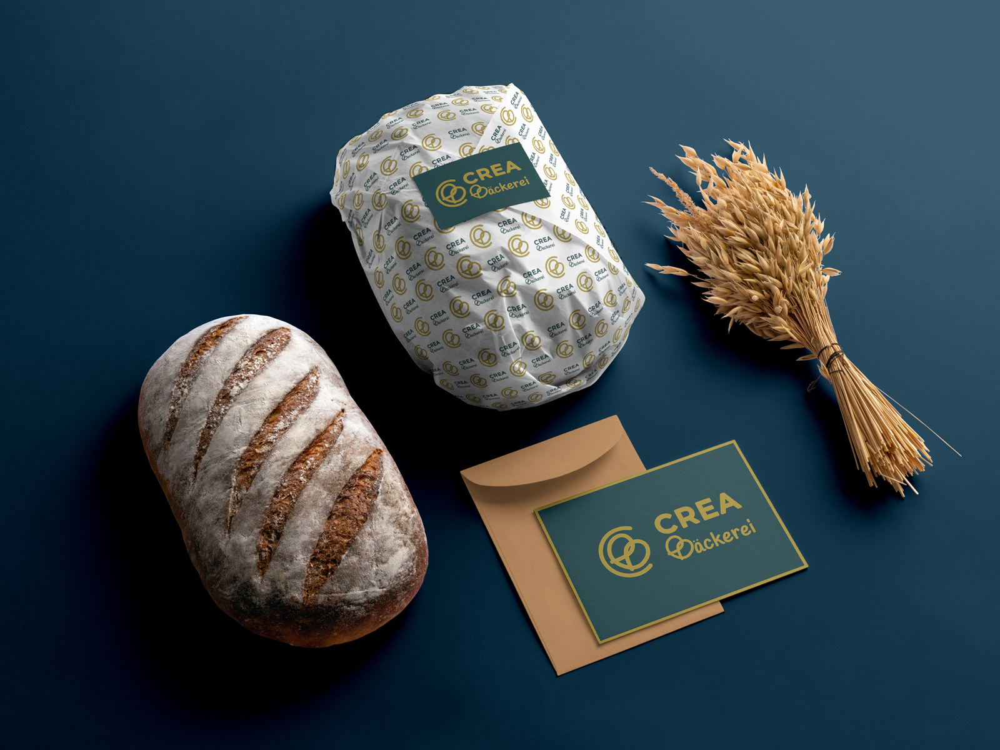
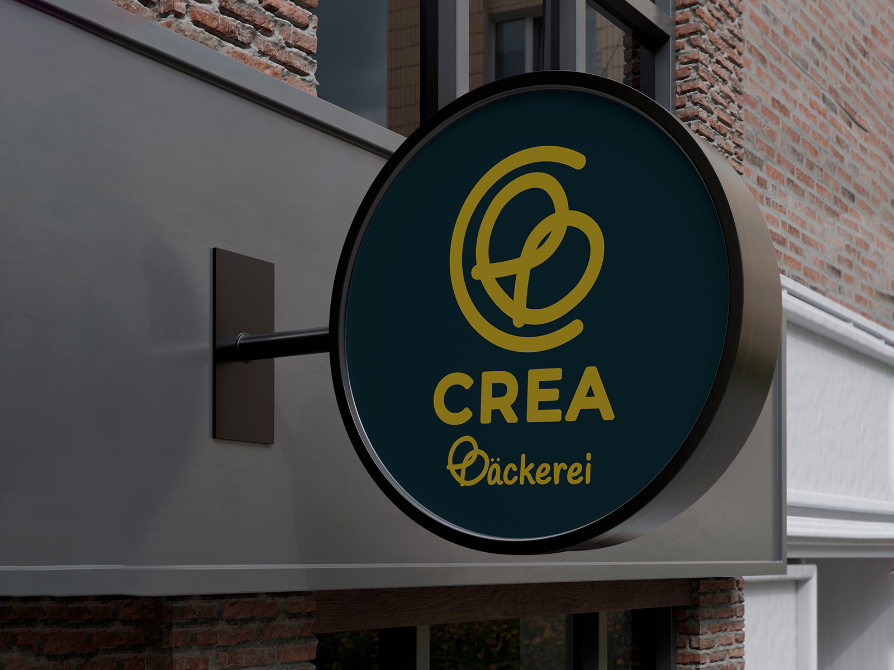
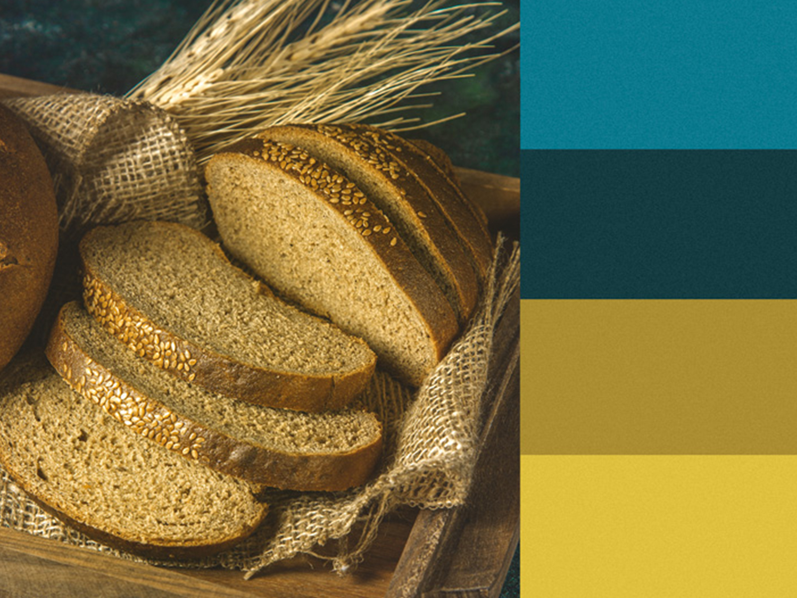
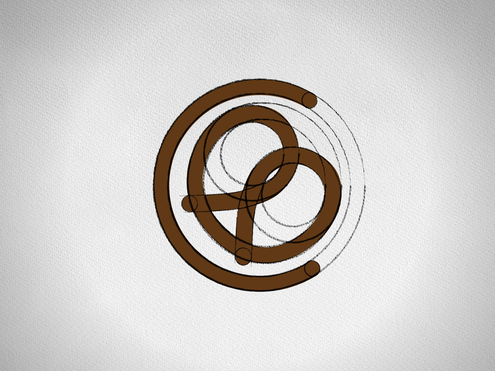
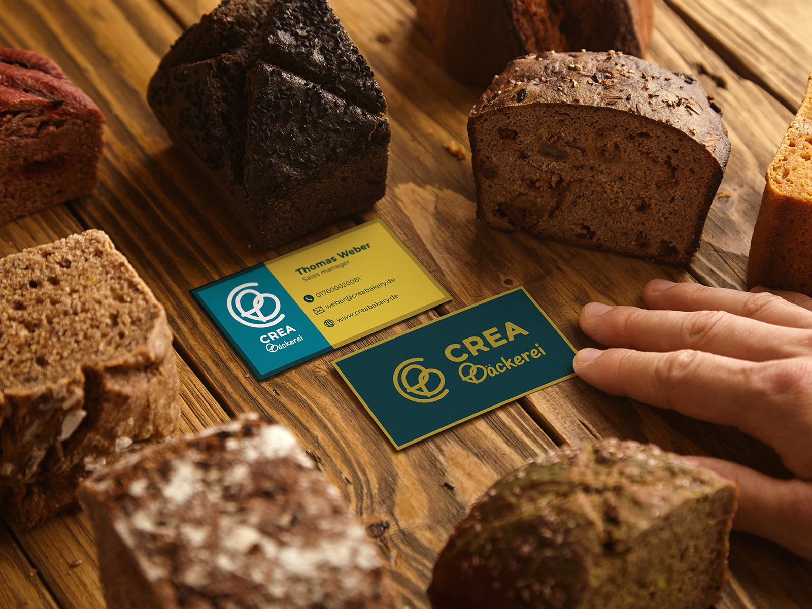
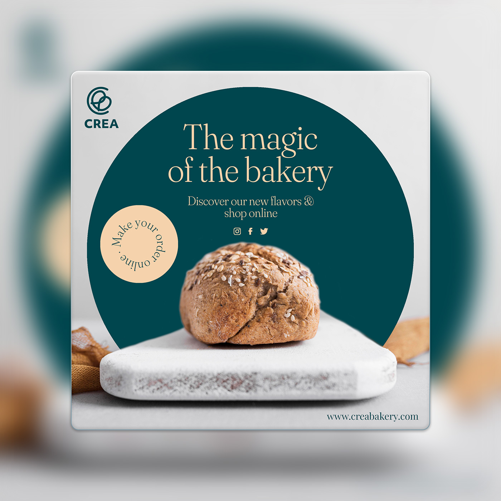
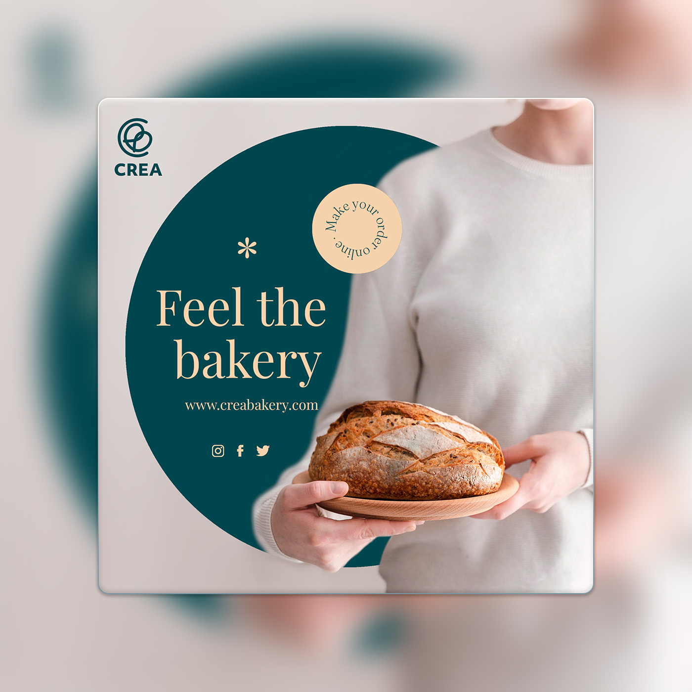
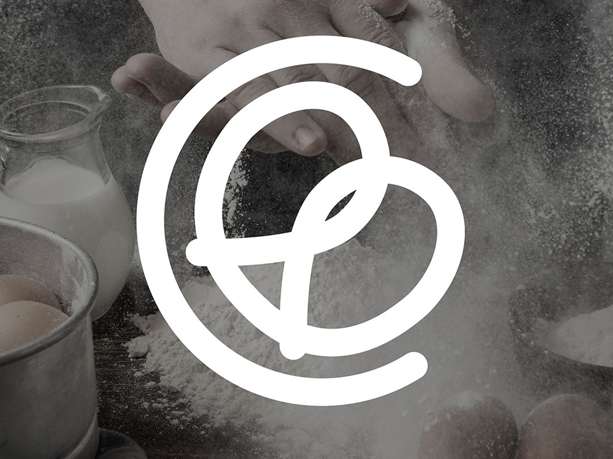

Packaging that feels like the product before it's opened — kraft stock, a hand-built grid, and a wordmark that bends with whatever it wraps.
Crea Bäckerei is a family-owned bakery that needed a friendly, trustworthy identity before opening day. With a small budget, the goal was to build awareness fast and feel welcoming both in-store and online.

Crea Bakery — 01+
Crea Bakery — 02+The brand had to stand out at street level and still stretch across packaging, social media, and small promotional pieces. Everything needed to be clear and recognizable at a glance.

Crea Bakery — 03+I built a warm identity around a friendly logomark and wordmark, then added a palette, typography, and photographic direction to carry it everywhere. It rolled out across signage, packaging, social templates, stickers, and opening invitations, backed by simple guidelines and vendor-ready files.

Crea Bakery — 04+
Crea Bakery — 05+Warmth is not a style. It's a decision made at every touchpoint.
The identity built early awareness before opening day, bringing strong local recognition, more social engagement, and early foot traffic. It was a clear, inviting brand doing the work, not a marketing budget.

Crea Bakery — 08+
Crea Bakery — 10+This project showed me how far a simple, well-structured system can go for a small business. Next time, I'd test early with pop-ups or mock signage to check scale and visibility before final production.

Crea Bakery — Final+